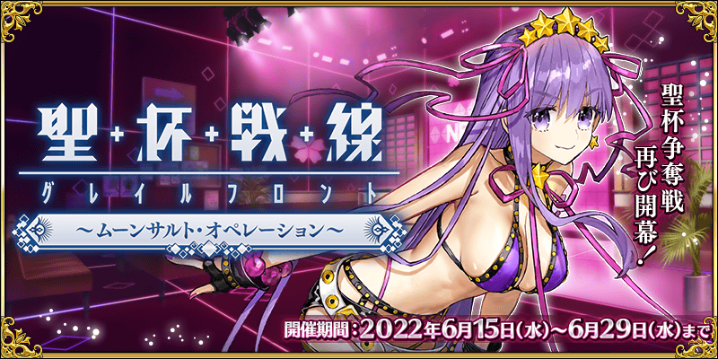
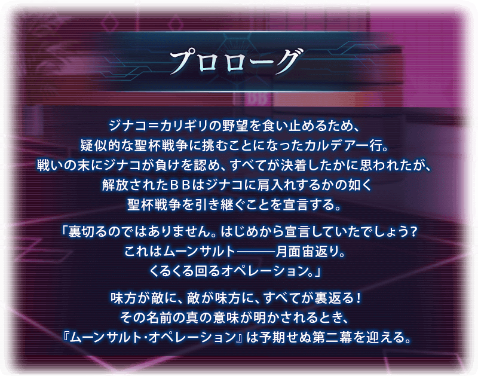 ※6月18日(六) 17:00圖片更新
【6月19日(日) 17:00更新】
【公告的主要追記・更新履歴】 ■★5(SSR)BB的強化關卡追加！(6/19追記)NEW ■ 序言更新(6/18更新) ■ 活動的推進方式圖片更新(6/18更新) ■ ★5(SSR)BB的寶具演出翻新！(6/18追記) ■ ★5(SSR)BB的2種類的簡易靈衣開放權在達文西工房的「靈衣縫製」追加！(6/18追記) ■ 4位從者的強化關卡追加！(6/15追記)
期間限定活動「聖杯戰線 ～月球空翻・行動～」開幕！
為了拯救人類的危機，將SE.RA.PH做為戰鬥場地挑戰新的聖杯戰線！
本活動中，會逐日開放「聖杯戰線」，分成敵我方的御主與從者，於専用的戰鬥場地反覆戰鬥，爭奪勝敗。
勝利後可入手1個聖杯之滴，收集7個的話能交換聖杯，取勝所有的戰鬥，以聖杯的獲得為目標吧！
※本頁面皆為開發中圖片。會有與實際圖片相異的情況。
◆活動舉辦期間◆
2022年6月15日(三) 17:00～6月29日(三) 11:59
◆活動參加條件◆
滿足以下條件的御主才能參加
・通過「終局特異點」
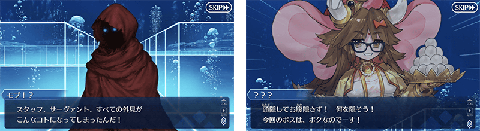
※6月18日(六) 17:00圖片更新
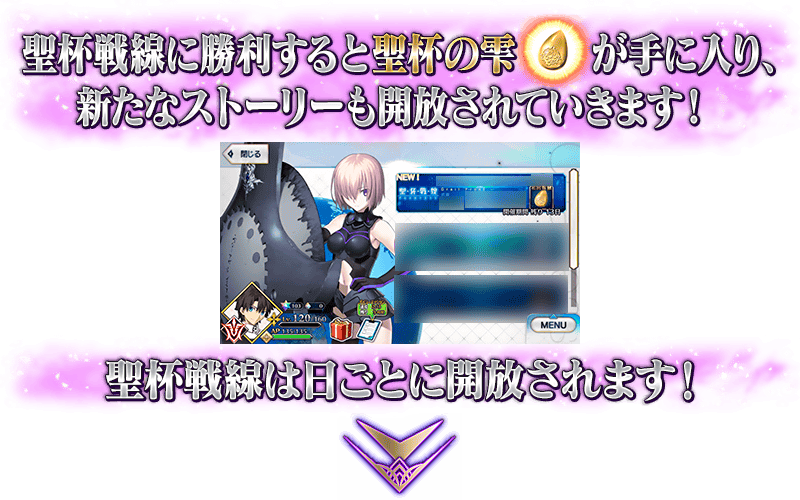 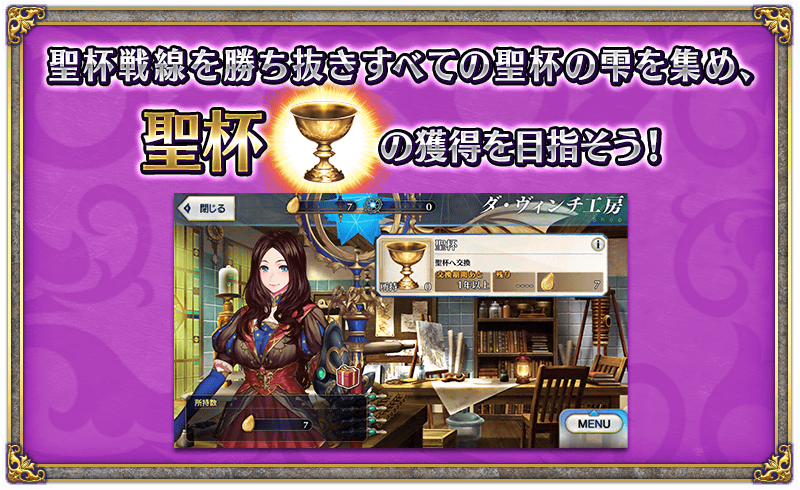
※6月18日(六) 17:00圖片更新
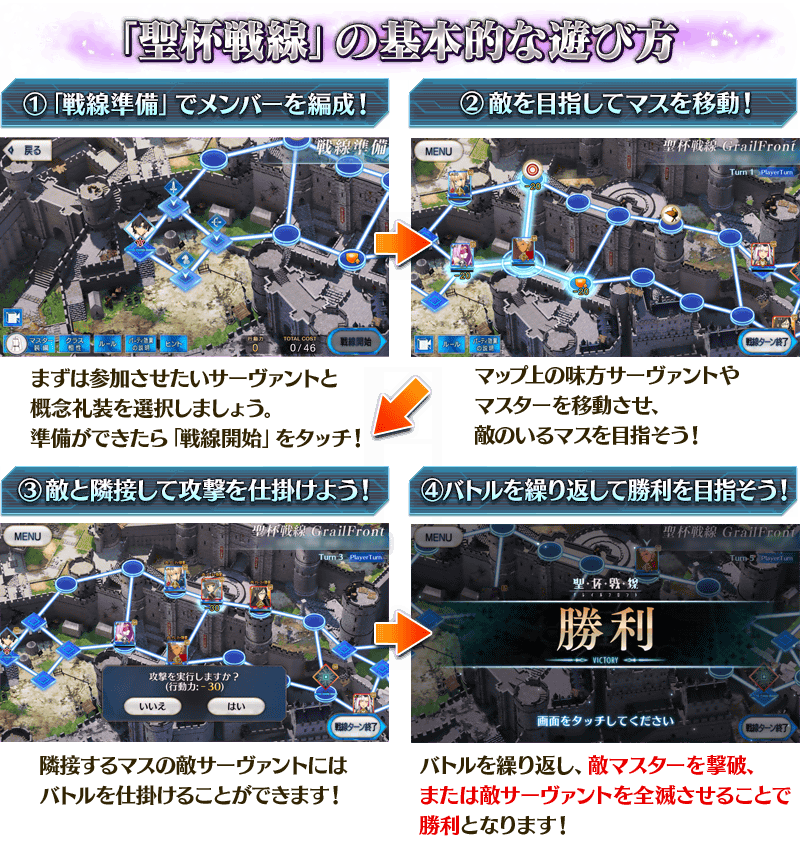 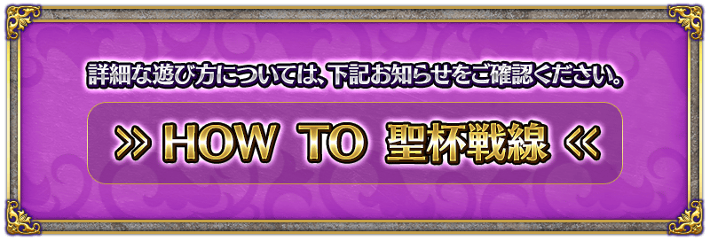
期間限定活動「聖杯戰線 ～月球空翻・行動～」的聖杯戰線將會逐日開放。
第2天以後開放的聖杯戰線和主線關卡，藉由通過聖杯戰線來變得可進行。
【開放時間表】
| 開放時間 | 開放的 聖杯戰線與主線關卡 |
|---|---|
|
2022年6月15日(三) 17:00～ 6月29日(三) 11:59 |
主線關卡 聖杯戰線 第一戰 練習用關卡 |
|
2022年6月16日(四) 17:00～ 6月29日(三) 11:59 |
聖杯戰線 第二戰 |
|
2022年6月17日(五) 17:00～ 6月29日(三) 11:59 |
聖杯戰線 第三戰 |
|
2022年6月18日(六) 17:00～ 6月29日(三) 11:59 |
主線關卡 聖杯戰線 第四戰 |
|
2022年6月19日(日) 17:00～ 6月29日(三) 11:59 |
聖杯戰線 第五戰 |
|
2022年6月20日(一) 17:00～ 6月29日(三) 11:59 |
聖杯戰線 第六戰 |
|
2022年6月21日(二) 17:00～ 6月29日(三) 11:59 |
主線關卡 聖杯戰線 第七戰 |
※聖杯戰線可獲得的通過報酬、戰利品、御主EXP、魔術禮裝EXP、絆點數只限初次通過時。 ※聖杯戰線的通過不包含在每日任務「通過關卡〇次」以外的任務達成條件。 ※敬請注意聖杯戰線開戰的情況，該戰鬥結束前無法「強化」「召喚」等聖杯戰線以外的事情(戰鬥的途中選擇「戰線脫離」也可回到聖杯戰線的選擇畫面，但聖杯戰線會重置)。 ※請注意選擇「戰線脫離」回到聖杯戰線的選擇畫面的情況，不會退回在聖杯戰線開始時消耗的AP。
關於聖杯戰線的練習用關卡
本次的聖杯戰線中，練習用的關卡會登場。
先在此關卡學習聖杯戰線的基本遊玩方式吧。
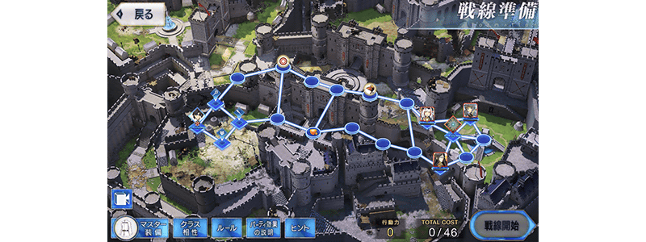
※6月15日(三) 17:00圖片更新
期間限定活動「聖杯戰線 ～月球空翻・行動～」的聖杯戰線中，關於自上次舉辦的期間限定活動「聖杯戰線 ～我的超級卡美洛2021～」有進行下述的內容調整。
關於在進行移動和攻擊時必須的行動力，至今為止的聖杯戰線中我方全體、敵方全體都是共享，本次的聖杯戰線中變更成御主和從者各自擁有個別行動力的規則。
另外，伴隨此變更，從者和御主的1回合內的行動次數沒有限制。
【行動力消耗的示意】
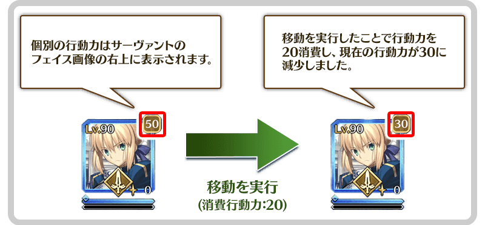
關於至今為止所有從者同樣的移動和攻擊的消耗行動力，變得會根據從者的職階變化。
【行動力・消耗行動力一覧】
| 種類 | 行動力的 最大値 |
攻擊的 消耗行動力 |
移動的 消耗行動力 |
從無法行動狀態 回復時的 消耗行動力 |
|
|---|---|---|---|---|---|
| 御主 | 50 | 30 | 30 | - | |
| Saber | 30 | 20 | 20 | ||
| Archer | 30 | 20 | 20 | ||
| Lancer | 30 | 20 | 20 | ||
| Rider | 30 | 15 | 30 | ||
| Caster | 30 | 20 | 30 | ||
| Assassin | 20 | 20 | 30 | ||
| Berserker | 30 | 20 | 40 | ||
| Ruler | 30 | 20 | 30 | ||
| Avenger | 30 | 20 | 20 | ||
| Alterego | 30 | 20 | 30 | ||
| MoonCancer | 30 | 20 | 30 | ||
| Foreigner | 30 | 20 | 30 | ||
| Pretender | 30 | 20 | 30 | ||
| Shielder | 30 | 20 | 30 | ||
※一部份關卡中，會有上述消耗行動力變化的情況。 ※特定的敵人會有與對應職階行動力・消耗行動力不同的獨特行動力・消耗行動力的情況。
關於御主和從者的位置交換
御主和從者的位置的發生交換時，至今為止一律消耗行動力10，從本次變成對應交換位置的御主、從者職階分別消耗的行動力。

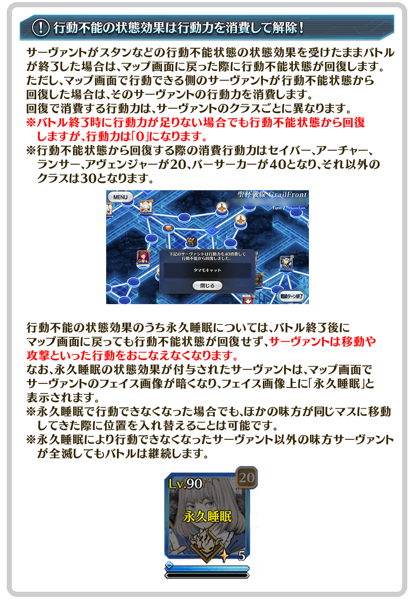
※6月15日(三) 17:00圖片更新

聖杯戰線的地圖畫面中，追加在Enemy turn中畫面點擊的話敵人方的行動高速化的功能。
※在地圖畫面顯示訊息的情況，會暫時回到平常的速度。
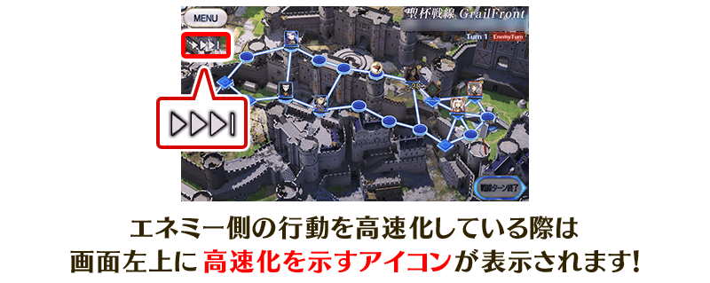
※6月15日(三) 17:00圖片更新
【6/15 13:00內容修正】
對應參加戰鬥的從者數，變得會發生「隊伍效果」！
有準備隊伍效果的聖杯戰線中，在多位我方從者攻擊敵從者時可得到如「威力提升」和「被爆擊發生耐性提升」有利的效果。此效果參加戰鬥的我方從者數越多則會越高。
另外，有多位敵從者參加戰鬥的情況は，敵方也同様會發生隊伍效果發生。
隊伍效果的詳細，可點擊地圖畫面左下「隊伍效果的說明」後確認。
※就算在戰鬥開始後因無法戰鬥等參加從者數減少的情況，該場戰鬥中得到的隊伍效果不會變化。(6/15 13:00內容修正)
※由於強敵也是敵隊伍效果的對象，在戰鬥開始前請注意。
※隊伍效果無法靠強化解除等解除。
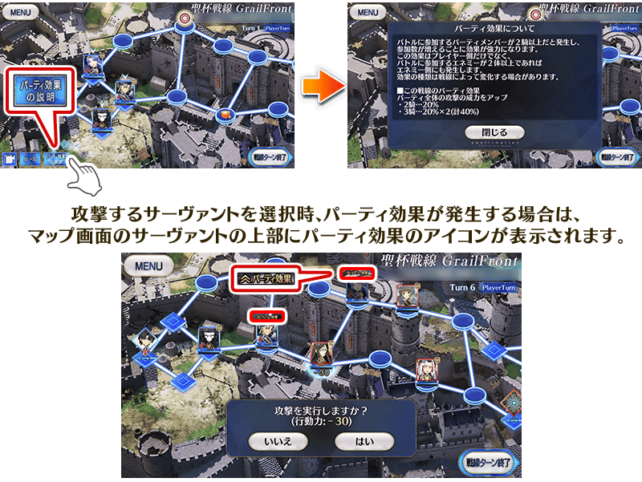
※6月15日(三) 17:00圖片更新
【6月18日(六) 17:00追記】
翻新「★5(SSR)BB」的寶具演出，變得會對應靈基再臨階段和穿著靈衣來變化演出！
◆翻新實施時間◆
2022年6月18日(六) 17:00～

【6月18日(六) 17:00追記】
在2018年舉辦的期間限定活動「從者．夏日．慶典！」及2019年舉辦的「復刻:從者．夏日．慶典！ 輕量版」中登場的「★5(SSR)BB」的簡易靈衣「小惡魔柔嫩肌膚(第二再臨)」與「小惡魔柔嫩肌膚(第三再臨)」的開放權，在達文西工房的「靈衣縫製」追加！
用稀有稜鏡2個交換後，可入手上述靈衣開放權。
並且，有通過「深海電腦樂土 SE.RA.PH」「復刻版:深海電腦樂土 SE.RA.PH -Second Ballet-」「主線分支 深海電腦樂土 SE.RA.PH」任一的「終幕」的情況即可免費交換簡易靈衣「小惡魔柔嫩肌膚(第二再臨)」與「小惡魔柔嫩肌膚(第三再臨)」的開放權！
另外，想靈衣開放的話，除了靈衣開放權外再加上必須滿足一些開放條件。
◆追加時間◆
2022年6月18日(六) 17:00～
◆交換條件◆
滿足以下條件的御主才能交換
【小惡魔柔嫩肌膚(第二再臨)】 ・通過「特異點F 炎上汙染都市 冬木」 ・未入手簡易靈衣「小惡魔柔嫩肌膚(第二再臨)」開放權
【小惡魔柔嫩肌膚(第三再臨)】 ・通過「特異點F 炎上汙染都市 冬木」 ・未入手簡易靈衣「小惡魔柔嫩肌膚(第三再臨)」開放權
※追加到「靈衣縫製」的簡易靈衣「小惡魔柔嫩肌膚(第二再臨)」開放權、簡易靈衣「小惡魔柔嫩肌膚(第三再臨)」開放權為永久，沒有交換期限。 ※關於已經取得交換對象靈衣開放權的玩家，無法交換。 ※在用稀有稜鏡2個交換簡易靈衣「小惡魔柔嫩肌膚(第二再臨)」開放權或簡易靈衣「小惡魔柔嫩肌膚(第三再臨)」開放權後達成免費化條件的情況，會返還交換使用的稀有稜鏡2個到禮物箱。
◆靈衣開放權交換免費化的條件◆
滿足以下任一條件的御主才能免費交換
・通過「深海電腦樂土 SE.RA.PH」的「終幕」
・通過「復刻版:深海電腦樂土 SE.RA.PH -Second Ballet-」的「終幕」
・通過「主線分支 深海電腦樂土 SE.RA.PH」的「終幕」
◆有關靈衣開放權的注意◆
※「★5(SSR)BB」的靈衣是只變化外觀，語音不會變化的「簡易靈衣」。
※請注意未持有「★5(SSR)BB」的情況，可入手靈衣開放權。但無法進行靈衣開放。
◆追加道具(永久)◆
| 追加道具 | 能交換次數 | 1次交換所需的 稀有稜鏡數 |
|---|---|---|
| 簡易靈衣「小惡魔柔嫩肌膚(第二再臨)」開放權 | 1次 |
2個 有通過「深海電腦樂土 SE.RA.PH」「復刻版:深海電腦樂土 SE.RA.PH -Second Ballet-」「主線分支 深海電腦樂土 SE.RA.PH」任一「終幕」的情況就能免費交換！ |
| 簡易靈衣「小惡魔柔嫩肌膚(第三再臨)」開放權 | 1次 |
2個 有通過「深海電腦樂土 SE.RA.PH」「復刻版:深海電腦樂土 SE.RA.PH -Second Ballet-」「主線分支 深海電腦樂土 SE.RA.PH」任一「終幕」的情況就能免費交換！ |


「靈衣開放」是自強化畫面進行。
※「靈衣開放」後會自動切換戰鬥角色和外觀圖片。若想回到「靈衣開放」前的狀態和變成其他再臨階段的情況，可自從者詳細畫面變更。 ※進行「靈衣開放」不會讓職階和能力等有所變化。
介紹★5(SSR)BB的簡易靈衣開放後寶具演出！
介紹開放簡易靈衣「小惡魔柔嫩肌膚(第二再臨)」的「★5(SSR)BB」的寶具演出！

以期間限定在迦勒底之門內開放全種類每日出現的關卡「蒐集種火」與「修練場」。
◆舉辦期間◆
2022年6月15日(三) 17:00～6月22日(三) 11:59
◆對象關卡◆
・蒐集種火
【聖杯戰線支援】週一 蒐集種火<殺・槍篇>初級～極級
【聖杯戰線支援】週二 蒐集種火<騎・劍篇>初級～極級
【聖杯戰線支援】週三 蒐集種火<術・弓篇>初級～極級
【聖杯戰線支援】週四 蒐集種火<槍・殺篇>初級～極級
【聖杯戰線支援】週五 蒐集種火<劍・騎篇>初級～極級
【聖杯戰線支援】週六 蒐集種火<弓・術篇>初級～極級
【聖杯戰線支援】週日 蒐集種火<隨機篇>初級～極級
・修練場
【聖杯戰線支援】週一 弓之修練場 初級～極級
【聖杯戰線支援】週二 槍之修練場 初級～極級
【聖杯戰線支援】週三 狂之修練場 初級～極級
【聖杯戰線支援】週四 騎之修練場 初級～極級
【聖杯戰線支援】週五 術之修練場 初級～極級
【聖杯戰線支援】週六 殺之修練場 初級～極級
【聖杯戰線支援】週日 劍之修練場 初級～極級
※以期間限定出現的「蒐集種火」及「修練場」會繼承「關卡情報」到平常每天輪流出現的「蒐集種火」及「修練場」關卡。
※每日關卡的詳細如下。
【每日關卡一覧】
| 星期 | 關卡名 | 做為戰利品可獲得的 主要道具 |
攻略推薦 職階 |
|---|---|---|---|
| 一 | 【聖杯戰線支援】 週一 弓之修練場 |
Archer的靈基再臨用道具、Archer的技能強化素材道具 |   |
| 【聖杯戰線支援】 週一 蒐集種火<殺・槍篇> |
Assassin、Lancer、Berserker的經驗值卡 |   |
|
| 二 | 【聖杯戰線支援】 週二 槍之修練場 |
Lancer的靈基再臨用道具、Lancer的技能強化素材道具 | |
| 【聖杯戰線支援】 週二 蒐集種火<騎・劍篇> |
Rider、Saber、Berserker的經驗值卡 |   |
|
| 三 | 【聖杯戰線支援】 週三 狂之修練場 |
Berserker的靈基再臨用道具、Berserker的技能強化素材道具 | ALL |
| 【聖杯戰線支援】 週三 蒐集種火<術・弓篇> |
Caster、Archer、Berserker的經驗值卡 |  |
|
| 四 | 【聖杯戰線支援】 週四 騎之修練場 |
Rider的靈基再臨用道具、Rider的技能強化素材道具 |  |
| 【聖杯戰線支援】 週四 蒐集種火<槍・殺篇> |
Lancer、Assassin、Berserker的經驗值卡 | |
|
| 五 | 【聖杯戰線支援】 週五 術之修練場 |
Caster的靈基再臨用道具、Caster的技能強化素材道具 | |
| 【聖杯戰線支援】 週五 蒐集種火<劍・騎篇> |
Saber、Rider、Berserker的經驗值卡 | |
|
| 六 | 【聖杯戰線支援】 週六 殺之修練場 |
Assassin的靈基再臨用道具、Assassin的技能強化素材道具 | |
| 【聖杯戰線支援】 週六 蒐集種火<弓・術篇> |
Archer、Caster、Berserker的經驗值卡 | |
|
| 日 | 【聖杯戰線支援】 週日 劍之修練場 |
Saber的靈基再臨用道具、Saber的技能強化素材道具 | |
| 【聖杯戰線支援】 週日 蒐集種火<隨機篇> |
Saber、Archer、Lancer、Rider、Caster、Assassin、Berserker的經驗值卡(隨機) | - |
※Berserker在所有每日關卡皆為有效職階。

【6月19日(日) 17:00追記】
強化「★5(SSR)BB」的特別關卡「從者強化關卡」，在迦勒底之門永久追加。
不僅進行對象從者的強化，也可獲得聖晶石做為關卡通過報酬。
※請注意在從者強化關卡沒有文字冒險部份。
◆追加時間◆
2022年6月19日(日) 17:00～
◆開放條件◆
持有的強化對象從者，必須使其最終再臨。
※未持有對象從者的話，不會出現關卡。
※關卡沒有舉辦期限。

【6月15日(三) 17:00追記】
強化「★4(SR)BB」「★5(SSR)Meltryllis」「★5(SSR)Kingprotea」「★4(SR)Passionlip」的特別關卡「從者強化關卡」，在迦勒底之門永久追加。
不僅進行對象從者的強化，也可獲得聖晶石做為關卡通過報酬。
※請注意在從者強化關卡沒有文字冒險部份。
◆追加時間◆
2022年6月15日(三) 17:00～
◆開放條件◆
持有的強化對象從者，必須使其最終再臨。
另外，「★5(SSR)Kingprotea」的情況必須通過主線關卡第1部 第七特異點。
※未持有對象從者的話，不會出現關卡。
※關卡沒有舉辦期限。
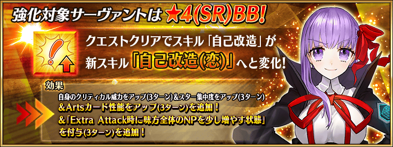
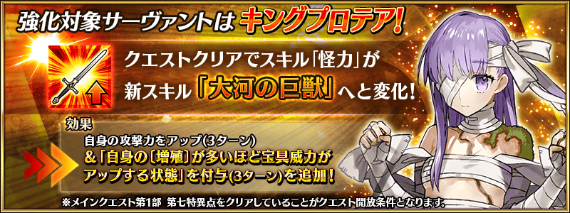

【6月19日(日) 17:00追記】
其他還有，
・聖杯戰線 ～月球空翻・行動～Pick Up召喚
・聖杯戰線 ～月球空翻・行動～Pick Up2召喚
以期間限定舉辦中！
關於詳情，請自下述橫幅確認。
■「聖杯戰線 ～月球空翻・行動～Pick Up召喚」詳細情報

■「聖杯戰線 ～月球空翻・行動～Pick Up2召喚」詳細情報